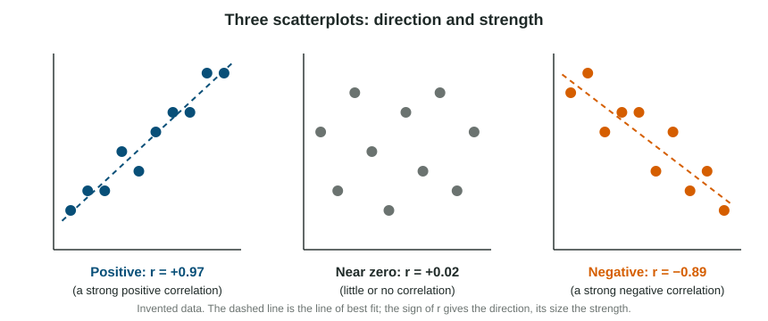

Many psychology findings are relationships: more sleep goes with better mood, more phone checks go with more distraction. This page shows how to read the direction and strength of a relationship, and why even a strong one does not show what causes what.
Scatterplots
A scatterplot shows two measurements for each person as one point: hours studied across the bottom, quiz score up the side. The cloud of points shows the relationship at a glance.

- Points that rise from lower left to upper right show a positive correlation: the variables rise and fall together.
- Points that fall from upper left to lower right show a negative correlation: as one rises, the other tends to fall.
- Points with no tilt show little or no correlation.
The line of best fit (or trend line) runs through the middle of the cloud. It lets you predict: read up from 4 hours to the line, then across to the predicted score.
The correlation coefficient
The correlation coefficient, , puts the pattern into one number between and .
| Part of | What it tells you | Example |
|---|---|---|
| Sign | direction: rise together, opposite directions | : more sleep, less daytime sleepiness |
| Size (ignore the sign) | strength: near 1 strong, near 0 weak | is stronger than |
A rough guide: a size of 0.7 or more is strong, 0.4 to 0.7 moderate, 0.1 to 0.4 weak, under 0.1 little or none. The sign never makes a correlation weaker: "negative" is a direction, not a judgment.
Worked example: comparing coefficients.
Which is strongest: , , , ?
Drop the signs: 0.45, 0.82, 0.10, 0.30. The largest is 0.82, so is the strongest. It is a strong negative correlation: as one variable rises, the other tends to fall, and the points sit close to a falling line.
Correlation is not causation
A correlational study measures variables as they are; nobody is assigned to anything. So two explanations are always open besides "A causes B".
A third variable can affect both. Ice cream sales and drownings rise together because hot weather brings both. Breakfast and grades go together, but a structured home life might bring both.
The directionality problem (reverse causation): even if one variable does affect the other, which way? Children who play violent games are rated more aggressive, but aggressive children may also choose violent games.
Worked example: answering "why can no cause be claimed?"
"Teens who spend more hours on screens have shorter attention spans ()."
Misses the point: "Because correlation is not causation." True, but it does not apply the idea to this study.
Earns the point: "The researchers only measured screen time and attention; they did not assign teens to screen time. A third variable such as poor sleep could shorten attention and also leave teens awake on screens longer, or teens who already find it hard to focus may turn to screens more."
Illusory correlations
Sometimes people are sure two things go together when the data show nothing. A nurse may be certain more babies are born under a full moon because busy full-moon nights are memorable, while busy nights at other times are forgotten. Large studies of birth records find no such link. This is an illusory correlation: a relationship believed in, not measured. It is one reason psychologists trust data over impressions.